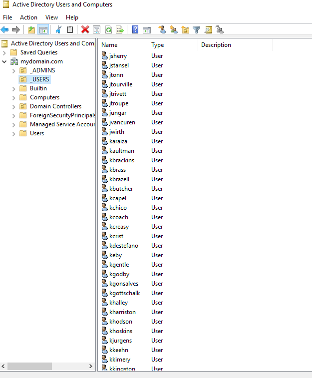
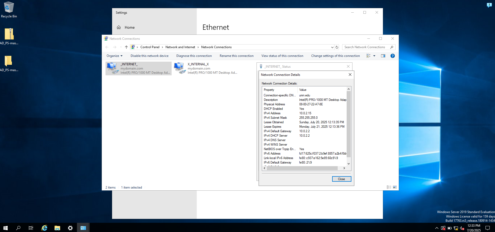
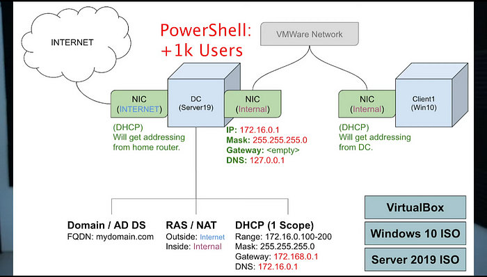
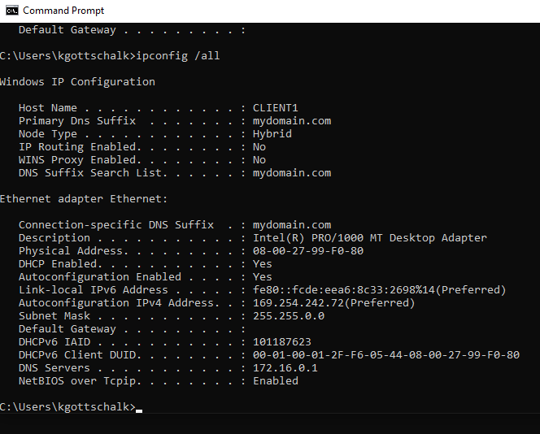

This project was created to be a sandbox, test environment for any cybersecurity-related projects. It consists of two virtual machines, a Windows Server configured as a domain controller and a Windows 10 client.
Both virtual machines were configured with dual network adapters, one using NAT for external internet access and the other using an internal network for isolated communication between the client and server. The server was promoted to a domain controller which allows the client to join the domain and PowerShell was used to create thousands of user accounts, simulating a multi-user network.
Networking: NAT configuration, internal routing, static IPs
Infrastructure: Active Directory, DNS server, DHCP role
Tools: Oracle VirtualBox, Windows Server 2019+, Windows 10 Pro



